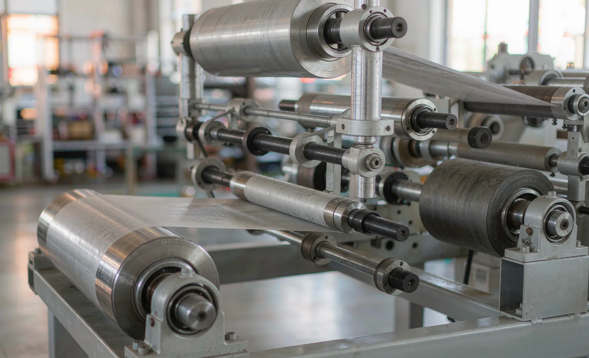
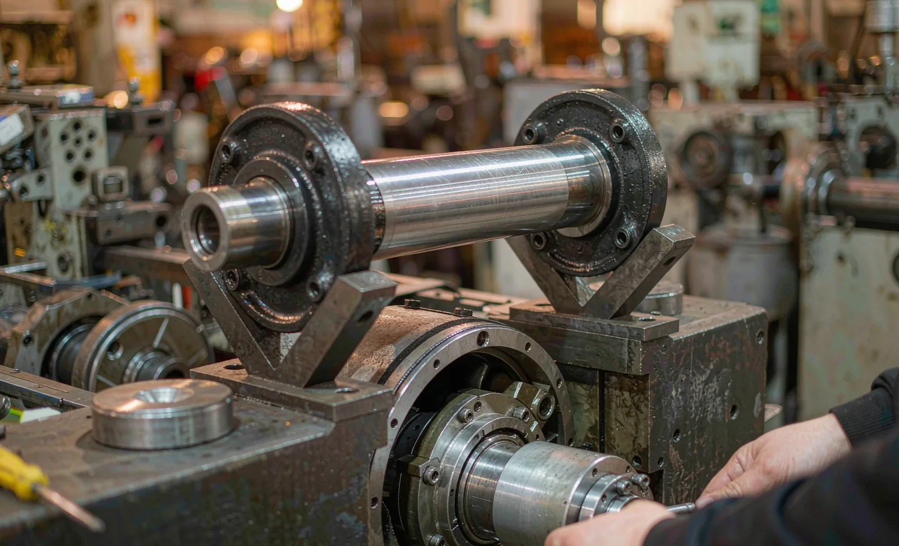

Published September 19, 2026 | By HDPTH Technical Editorial Team

Idler rollers are the least glamorous items on a slitter rewinder and among the most consequential. They carry the web, set its path, define local wrap and friction, and spin thousands of hours with little attention. When one degrades, the symptom arrives as a product defect — a periodic mark, a tracking wobble, a wrinkle that appears only above a certain speed. This guide sets out how to specify rollers and how to keep them out of your quality complaints.
Surface material and coating: match it to the web
The roller surface is the interface with your product, and it should be selected the way you would select any contact surface:
- Hard chromed or hard anodised metal: the default for nonwoven, paper and most film webs — hard, cleanable, dimensionally stable and resistant to the solvents used in hygiene and medical converting.
- Elastomer covering (rubber or polyurethane): used where friction is required — driven rollers, nip positions and pull rolls. Specify durometer against the actual nip load; too soft and the covering flat-spots and heats, too hard and it slips. See lay-on roller and nip pressure.
- Release and non-stick coatings: for adhesive-coated, tacky or heat-sensitive films, a fluoropolymer-type release surface prevents pick-up and build-up. Confirm it on your own material before committing.
- Special geometries: bowed spreader rolls, grooved and crowned profiles solve spreading, air removal and tracking problems. Treat them as engineered components with their own lead time; see bowed spreader rolls.
Whatever the surface, require a stated finish value and runout tolerance, and ask how the surface is repaired or recoated at end of life. A roller that can be reground and recoated locally is worth more over ten years than a marginally cheaper one that cannot.
Balance, runout and bearing configuration
At speed, imbalance and geometric error stop being theoretical: a roller slightly out of balance adds vibration proportional to speed, which transfers into the web and then into the wound roll as a periodic pattern. Ask for three things in writing — the balance grade or residual unbalance achieved, the speed at which balancing was done, and confirmation that the roller was balanced as a finished assembly including journals and bearing seats. Rollers running light webs at high speed justify a tighter grade than slow, heavy ones. Verify runout with a dial indicator after installation; see vibration and noise acceptance.
Bearings deserve equal attention. Sealed-for-life bearings reduce maintenance but hide their condition; regreasable bearings allow service but depend on someone doing it correctly. In lint-heavy nonwoven environments, sealing quality and dust and lint extraction matter more to bearing life than the rating does. Specify brand and size so spares are purchasable anywhere, and ask the expected service interval at your duty cycle.
| Symptom in the product | Likely roller-related cause | What to check first |
|---|---|---|
| Mark repeating at a fixed length interval | Damage or build-up on one roller surface | Measure the repeat distance and compare to roller circumference |
| Defect in one slit band only | Localised surface damage, or a bearing failing on one side | Inspect the roller across its width under good light |
| Tracking drift above a certain speed | Balance grade too coarse, or bearing wear | Vibration reading at speed; bearing play by hand |
| Wrinkles that come and go with tension | Glazed or polished roller surface slipping | Surface finish check; confirm wrap and friction |
| Static-related cling or dust attraction | Wrong surface for a static-prone film | Review coating choice and static control provision |
Maintenance rhythm and replacement triggers
Rollers fail slowly and then suddenly. A practical programme has three layers. Weekly, operators listen and look: unusual noise, a shine on a matt surface, a roller that no longer spins freely. Monthly or per service interval, maintenance measures bearing temperature and play, surface condition and journal cleanliness. Annually, critical rollers come out for runout and balance verification. Replace on evidence — measurable runout beyond tolerance, coating damage that cannot be locally repaired, bearing roughness, or any defect repeating at a distance equal to a roller circumference. Keep a written record per roller position; the plant that knows which roller was changed when solves quality complaints in minutes. See also roll defect troubleshooting and core chuck maintenance.

Specifying a new machine or rebuilding a web path?
Send HDPTH your web material, widths, speeds and any recurring defect description. We will specify roller surfaces, balance grades, bearings and a spare-parts package matched to your duty.
Submit Your Project InquiryQuestions to put to every supplier
- What is the roller surface material, coating and stated finish value for each position in the web path?
- Which balance grade is achieved, at what speed, and is a balance report supplied per roller serial number?
- What are the stated runout tolerances, and how are they verified on assembly?
- Which bearings are used — brand, size, sealing and lubrication regime — and are they globally available?
- Can coated rollers be reground and recoated, by whom, and at what lead time?
- Which rollers are non-standard, and what spare package do you recommend?
Continuing your evaluation?
Read our guides to tension control and web guiding, web guide sensors and static control — the other half of a stable web path.
Contact HDPTHFrequently asked questions
Why do idler rollers matter if they only carry the web?
Because the web touches them. Every idler sets the local friction, wrap angle and tracking behaviour of the material over it. A glazed surface slips, changing effective tension; bearing play oscillates, imprinting a periodic mark; imbalance vibrates at speed. Small defects on a free-spinning roller become visible defects in every roll the machine makes.
What roller surface should I specify for nonwoven and film webs?
Match the surface to the material and duty. Hard anodised or hard-chromed metal suits most nonwoven and paper webs and resists cleaning. Rubber or polyurethane covering is used where higher friction is needed — driven or nip positions — but the durometer must suit the nip load or the covering will flat-spot and overheat. For tacky or static-prone films, specify a release coating and confirm it with a trial on your own material, not a datasheet.
What balancing grade should a slitter rewinder roller meet?
Specify dynamic balancing to a stated grade and speed rather than an unspecified “balanced” claim, and ask for the balance report by roller serial number. Rollers destined for high line speeds and light webs need a tighter grade than slow, heavy-duty rollers. Ask the supplier to state the residual unbalance or the balance grade achieved, the speed at which balancing was performed, and whether the roller was balanced as a complete assembly including the journals and bearing seats.
How often should idler roller bearings be replaced?
Replace on condition, not on a fixed calendar, but keep a planned inspection rhythm: check bearing noise, temperature and play at every scheduled service interval, and trend the results. Bearings on high-speed rollers in dusty or lint-heavy environments fail much sooner than the same bearing in a clean one, so treat lint control and sealing as part of bearing life. Keep a small stock of the most common bearing and seal sizes so a single noisy roller does not stop the line.
What symptoms point to a roller problem rather than a tension or knife problem?
Look for periodicity. A defect repeating at a fixed interval along the roll, or in one slit band and not its neighbours, usually traces back to a rotating component — roller, shaft or bearing. Tracking drift that appears only above a certain speed points to balance or bearing condition. Measure the repeat distance: it is the fastest way to the culprit.
Sources
- ISO 12100: Risk assessment and risk reduction
- UK HSE: Work equipment and machinery guidance — safe use and maintenance duties
- OSHA: Machine guarding resources for moving webs, rollers and point-of-operation hazards
- TAPPI: technical association for the pulp, paper, packaging and converting industries
- ASTM International: consensus standards for materials, coatings and test methods